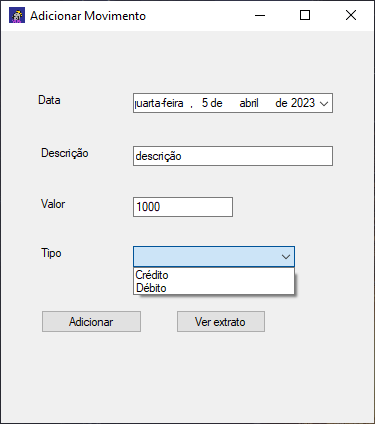
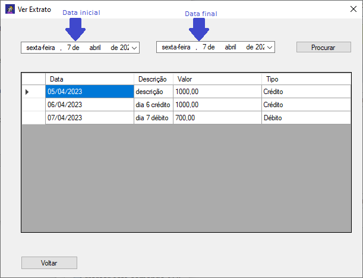

Para adicionar um novo movimento, deve-se definir a data, descrição, valor e tipo da operação: crédito, para acrescentar valor, ou débito, para retirar valor. Depois disso, basta clicar em “Adicionar”.
Ver Extrato
Ainda nessa tela, clique em “Ver extrato”, e uma nova tela se abrirá, mostrando inicialmente todos os movimentos já adicionados. Para visualizar apenas os movimentos de um período específico, coloque as datas inicial e final nos campos de data na parte superior da tela e clique em “Procurar”.
